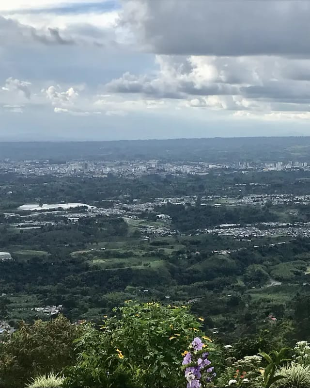
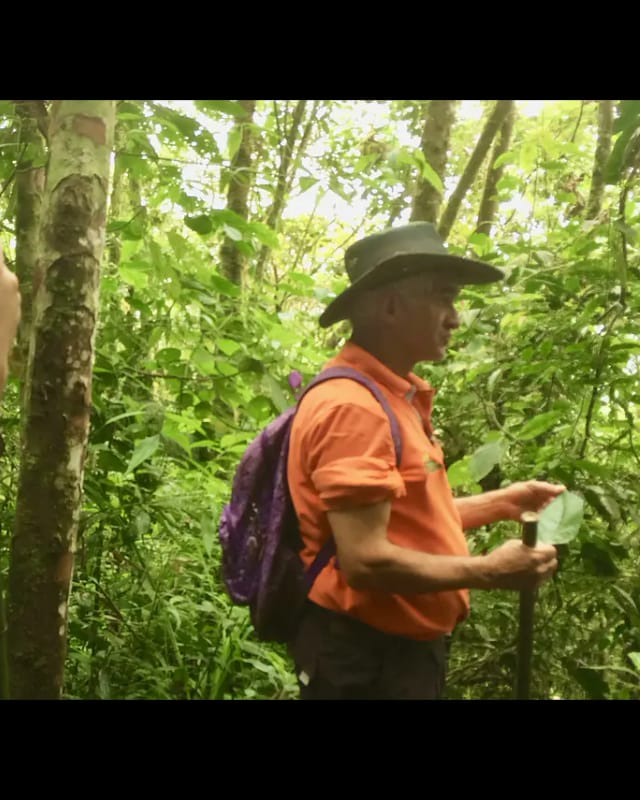
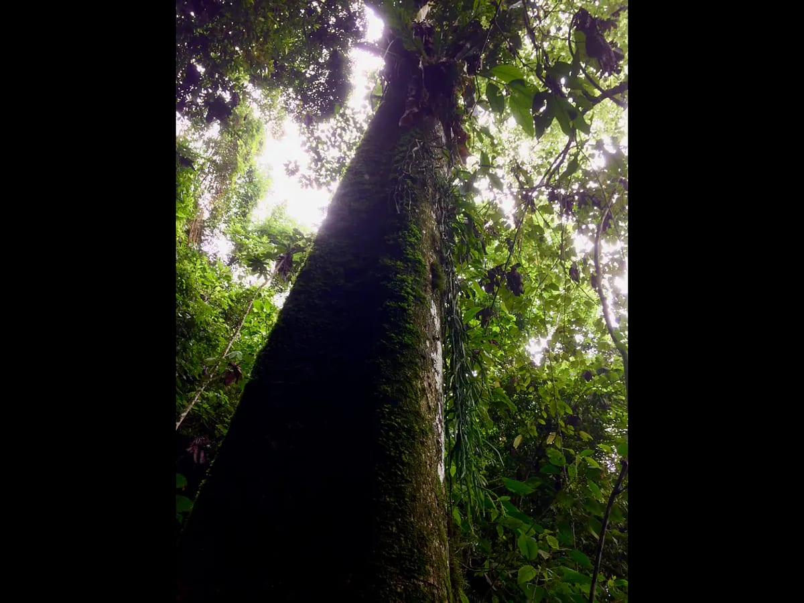
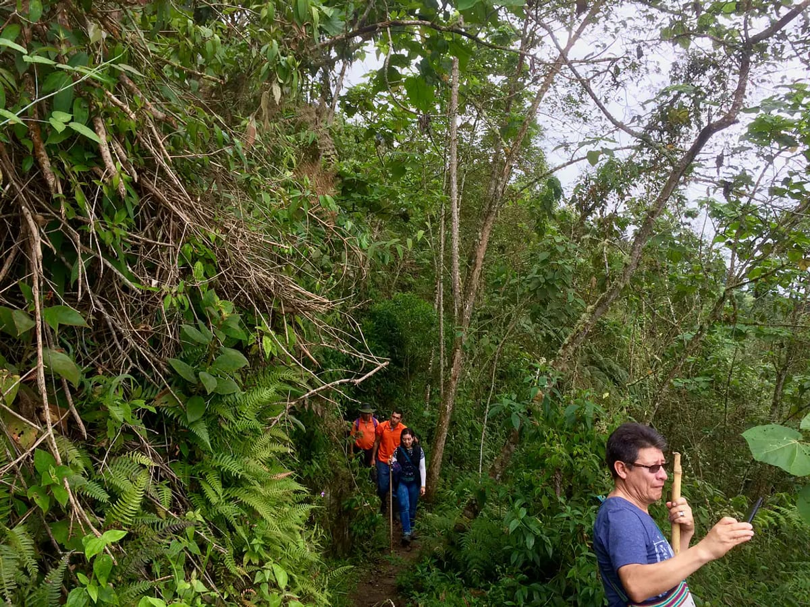
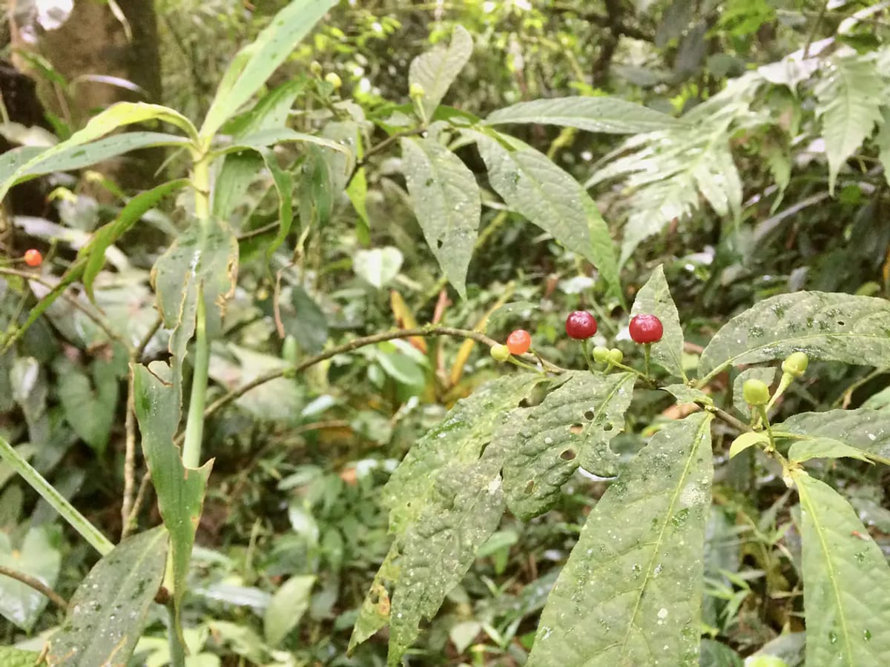
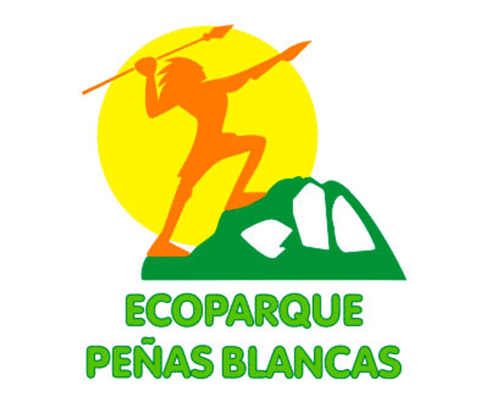

✈️ Aeroporto di Pereira
~1h 40min in auto
La porta d'ingresso più facile alla Regione del Caffè. Voli giornalieri da Bogotá, Medellín, Cali e Miami.
Arrivo internazionaleEcoparque Peñas Blancas è una riserva naturale a Calarcá, nel cuore della Regione del Caffè colombiana, dove roccia, foresta nebulare e leggenda del Cacique Calarcá si incontrano. Arrampicata, doppia corda, speleologia, escursioni e camping a 2.430 m di altitudine.

Cordigliera CentraleCalarcá è ben collegata. Se vai già a Salento, Valle di Cocora o Pereira, aggiungere un giorno a Peñas Blancas è una scelta vincente.
La porta d'ingresso più facile alla Regione del Caffè. Voli giornalieri da Bogotá, Medellín, Cali e Miami.
Arrivo internazionaleSe sei già a Salento, una mezza giornata a Peñas Blancas si incastra perfettamente nel tuo itinerario caffeicolo.
Day-trip perfettaCapitale del Quindío. Prendi un Jeep Willys dalla Plaza de Mercado di Calarcá fino a La Virginia.
Più vicinoUna settimana in Colombia senza la Regione del Caffè non è completa. Peñas Blancas merita un posto nel tuo viaggio.
Viaggio lungoUna vista dal drone del sentiero, della parete e del panorama a 360° sul Quindío.

📹 Video di Mosquera Music · Guarda su YouTube

Foresta
Nebulare
Roccia
Pareti 280 m
Vetta
2.430 m s.l.m.Nel villaggio di La Virginia, sopra Calarcá, le pareti bianche si ergono come un balcone naturale sopra il Quindío. L'Ecoparco protegge questa montagna ancestrale, casa della leggenda del Cacique Calarcá e delle culture Quimbaya e Pijao.
Qui avventura e conservazione vanno di pari passo: ogni visita supporta una foresta dove abbiamo già piantato oltre 20.000 alberi.
Da una passeggiata tranquilla nella foresta a una giornata intera di arrampicata e doppia su pareti di 80 metri.
Pareti naturali fino a 280 metri, completamente verticali. Vie per principianti e avanzati, con istruttore e attrezzatura certificata.
Avventura · UIAAScendi pareti fino a 80 metri secondo gli standard internazionali. Sicura, senza bisogno di esperienza.
Avventura · UIAAEsplora grotte profonde sulle tracce della leggenda del Cacique Calarcá. Una spedizione nel cuore umido e silenzioso della montagna.
Avventura · CulturaPercorso di 3,2 km nella foresta nativa, punti panoramici e zone di rimboschimento. Ideale per famiglie, coppie e birdwatcher.
NaturaLa foresta nebulare del Quindío ospita decine di specie. Porta il binocolo — tucani, colibrì e rapaci ti aspettano.
Natura · BirdingMini-zipline di 40 metri sopra la foresta. Perfetta per bambini e per chi vuole un assaggio di adrenalina senza tanta altezza.
FamigliaCalcio a 8, pallavolo, giochi per bambini e piste di osservazione. Spazi all'aperto per gruppi.
Gruppi · FamigliaWorkshop e tour guidati per scuole e gruppi: rimboschimento, fauna del Quindío, cultura Quimbaya/Pijao.
Scuole · GruppiL'ingresso del sentiero è molto accessibile. Le attività d'avventura e il soggiorno sono quotati per gruppo — scrivici e creiamo il tuo piano ideale.
Sentiero ecologico
Arrampicata · Doppia · Speleo
Pernotta in montagna
💬 Per tariffe aggiornate scrivici su WhatsApp o chiama: +57 310 396 7951 · +57 300 658 7163.
La montagna di notte è un'altra cosa. Svegliati al canto degli uccelli e al profumo della foresta umida.

Un rifugio spazioso e accogliente, ideale per gruppi, famiglie o ritiri tranquilli. Fino a 10 persone.

Ampio spazio con piazzole, drenaggio, cucina comune e servizi. Privacy e silenzio nella natura.

Cucina tradizionale del Quindío con ingredienti freschi locali. Pranzi tipici, succo di canna e caffè locale.
«Prima dell'arrivo dei conquistatori spagnoli, il Cacique Calarcá nascose l'oro del suo popolo nelle grotte e nelle pareti bianche della montagna. Chi cammina su queste rocce oggi cammina nella storia dei popoli Pijao e Quimbaya.»
— Tradizione orale del Quindío
Un assaggio del paesaggio che ti aspetta. Per le foto reali del parco seguici su @ecoparquepenasblancas.
 penas-07.jpg" alt="Foresta nebulare" loading="lazy" width="600" height="600">
penas-07.jpg" alt="Foresta nebulare" loading="lazy" width="600" height="600">




Il parco accoglie visitatori dal mercoledì al lunedì in orario diurno. Consigliamo di arrivare presto per godere della luce migliore nella foresta.
Per arrampicata, doppia e speleologia è indispensabile prenotare in anticipo per coordinare guida e attrezzatura.
💡 La fascia migliore per foto e camminate tranquille è 9:00–11:30.
Villaggio di La Virginia, 30–40 min dal centro di Calarcá. Nel cuore della Regione del Caffè colombiana, vicino ad Armenia, Salento e Filandia.
Calarcá, Quindío · Colombia. 2.430 m s.l.m., sulle Ande Centrali, nel Paesaggio Culturale del Caffè.
Apri in Google MapsDistanze approssimative
Tutto quello che devi sapere prima di salire all'ecoparco.
L'ingresso del sentiero costa da COP $7.000 a persona e include una bevanda. Le attività d'avventura e il soggiorno sono quotati a parte su WhatsApp.
Nel villaggio di La Virginia, comune di Calarcá, dipartimento di Quindío. A 30–40 min dal centro di Calarcá su strada di montagna.
Prendi un Jeep Willys alla Plaza de Mercado di Calarcá. Corsa espressa al parcheggio: circa COP $30.000.
No. Lavoriamo con istruttori e tutta l'attrezzatura rispetta la norma internazionale UIAA. Principianti, famiglie e gruppi benvenuti.
Scarpe chiuse con buona aderenza, pantaloni lunghi, acqua, repellente, crema solare e giacca leggera. Temperature: 12–20 °C.
Sì. Bambini accompagnati da un adulto. Animali ammessi con guinzaglio e libretto vaccinazioni in regola.
Sì — ristorante con cucina del Quindío (su prenotazione), rifugio fino a 10 persone e area camping con cucina comune, bagni e docce.
Per visite guidate e attività d'avventura: dal mercoledì al lunedì, 9:00–15:00. Conferma sempre su WhatsApp prima di salire.
L'ecoparco è una riserva: vietato fumare, alcol, sostanze e armi. Riportate tutta la spazzatura. Aiutateci a proteggere la foresta.
La tradizione Quimbaya e Pijao narra che il Cacique Calarcá nascose il tesoro del suo popolo nelle grotte e nelle pareti bianche prima dell'arrivo dei conquistatori spagnoli. Camminare nelle grotte oggi è entrare in quella storia antica.
Scrivici su WhatsApp per prenotare una visita, organizzare attività d'avventura, soggiorno o un piano su misura per il tuo gruppo.
In montagna in 4 passi
Il parco è a La Virginia, 30–40 min da Calarcá. Strada di montagna — vai con calma, ci arrivi.
Arriva a Calarcá
Calarcá è a 10 min da Armenia. In bus, scendi al terminal di Calarcá e raggiungi la Plaza de Mercado.
Prendi un Jeep Willys
Alla Plaza de Mercado prendi un Jeep Willys fino all'ecoparco. Corsa espressa al parcheggio: circa COP $30.000.
Coordina la visita
Prima di salire, scrivici su WhatsApp per confermare guida, attrezzatura o soggiorno. In montagna il segnale è limitato.
Porta il necessario
Scarpe chiuse, pantaloni lunghi, acqua, repellente, crema solare e giacca leggera. Temperature: 12–20 °C.